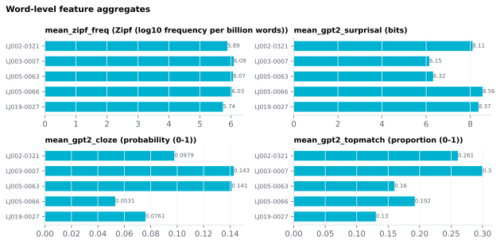

6.2.2Word-level feature aggregates
Document-level means of word-level lexical features.
6.2.2.1What it is
Document-level means of word-level lexical features. Each toggle
controls a family of mean_* columns in the document summary CSV:
| Toggle | Columns emitted | Sourced from word-level |
|---|---|---|
output_doc_agg_zipf_freq |
mean_zipf_freq |
Zipf_Freq |
output_doc_agg_edu_zipf |
mean_edu_zipf_{k2,3to5,6to8,9to12,overall} |
Edu_Zipf_* |
output_doc_agg_predictability |
one mean_<slug>_<metric> column per <slug>_<Metric> word-level column currently selected (e.g. mean_gpt2_surprisal, mean_llama3_8b_cloze) |
Surprisal, Cloze, TopMatch |
mean_edu_zipf_* is written only when data/dictionaries/edu_zipf.parquet
exists, which it does not by default (why).
Unlike the other two rows, output_doc_agg_predictability doesn't name
a fixed column set — it scans the word-level DataFrame for every
column matching <slug>_Surprisal / <slug>_Cloze / <slug>_TopMatch
(one per model x metric selected in the Predictability card) and
aggregates each one found. Enabling more models/metrics on the
Word-level features page grows this column family automatically; no
separate doc-level toggle per model.
Aggregates are computed only over rows where the underlying value is not NaN — so PUNCT rows are excluded automatically.
The doc-level page surfaces a warning indicator on a toggle when the underlying word-level stage is not in the current run plan — e.g. enabling
mean_zipf_freqwhile SUBTLEX is off at the word level will emit NaN. Look for the amber ⚠ next to the toggle.
6.2.2.2See it

6.2.2.3In your output
| stimulus_id | mean_zipf_freq Zipf (log10 frequency per billion words) | mean_gpt2_surprisal bits | mean_gpt2_cloze probability (0-1) | mean_gpt2_topmatch proportion (0-1) |
|---|---|---|---|---|
| LJ002-0321 | 5.886 | 6.788 | 0.1104 | 0.3043 |
| LJ003-0007 | 6.091 | 5.657 | 0.1398 | 0.2667 |
| LJ005-0063 | 6.069 | 6.317 | 0.1412 | 0.16 |
| LJ005-0066 | 6.029 | 8.558 | 0.05314 | 0.1923 |
| LJ019-0027 | 5.743 | 7.183 | 0.07744 | 0.1304 |
6.2.2.4MATLAB
% Load the document-level table (one row per stimulus)
T = readtable('document/documents_summary_<timestamp>.csv', 'TextType', 'string');
T.Properties.VariableNames % every column in the file
head(T(:, {'stimulus_id', 'mean_zipf_freq', 'mean_gpt2_surprisal', 'mean_gpt2_cloze', 'mean_gpt2_topmatch'}), 10) % this feature's columns (first rows)
% Plot
barh(T.mean_zipf_freq); yticks(1:height(T)); yticklabels(T.stimulus_id); xlabel('mean_zipf_freq')
6.2.2.5Usage
Stimulus-level descriptors for cross-stimulus comparisons or for
matching stimuli on average difficulty. A mean_<slug>_topmatch
column is the proportion of content words that model <slug>
nailed exactly — a single-number "predictability score" for the
document, per model.
6.2.2.6In the code
Computed in sensi/utils/doc_summary.py:build_doc_summary. The
mean_zipf_freq / mean_edu_zipf_* columns are each
np.nanmean(word_df[<fixed source column>]). The predictability
family is dynamic: _PREDICTABILITY_COL_RE (^(?P<slug>[a-z0-9_]+)_ (?P<metric>Surprisal|Cloze|TopMatch)$) matches every <slug>_<Metric>
column actually present in the word-level frame, and each match is
aggregated to mean_<slug>_<metric-lowercased>. The doc-level
preflight in sensi/gui/section_doc_features.py:_refresh_agg_warnings
checks the planner's stages_to_run and warns when an aggregate is
enabled but its source stage (predictability) is absent.